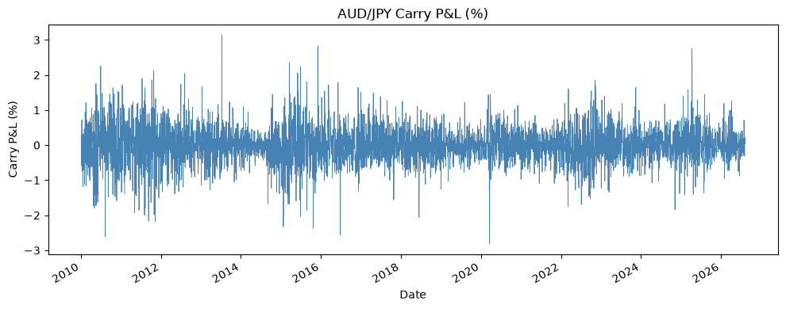
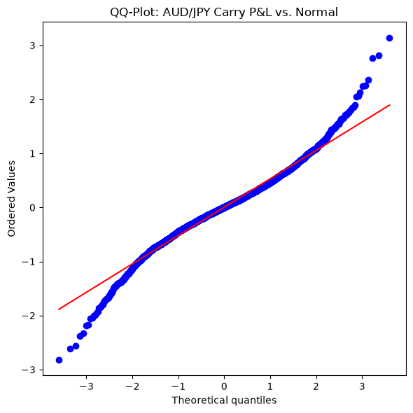
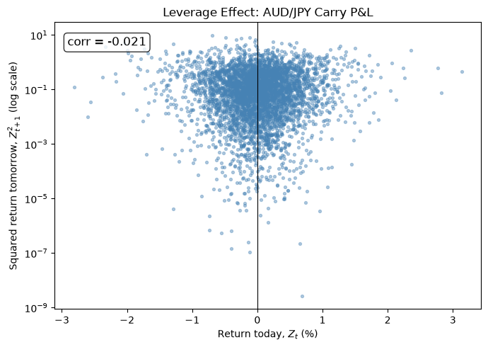
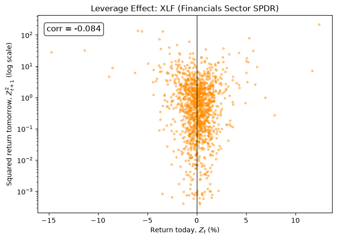
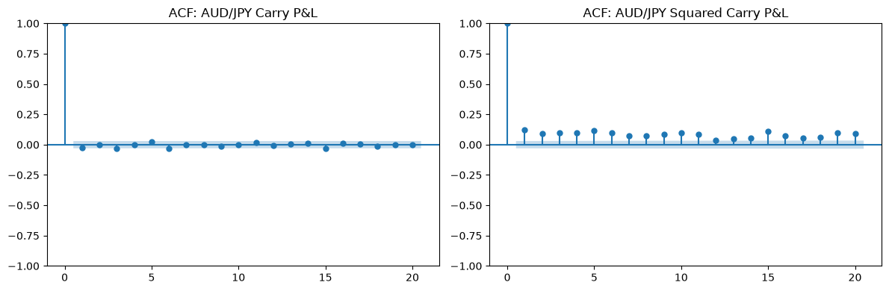
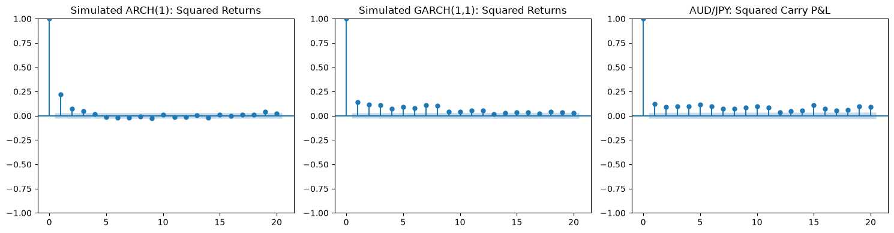

ARMA models assume the noise variance \sigma^2 is constant regardless of time.
This is clearly violated in financial returns. Consider daily S&P 500 returns:
2006: annual volatility \approx 10\%
2008: annual volatility \approx 40\%
2020 (March): daily moves of 5–10%
No ARMA model captures this. We need a model where the conditional variance evolves over time.
Volatility Clustering in FX Returns
Our running example — the AUD/JPY carry trade — shows the same pattern. Large moves cluster in time:
import numpy as npimport pandas as pdimport matplotlib.pyplot as pltcarry = pd.read_csv("../data/carry_pnl.csv", index_col=0, parse_dates=True)["carry_pnl"]fig, ax = plt.subplots(figsize=(10, 4))carry.plot(ax=ax, lw=0.6, color="steelblue")ax.set_title("AUD/JPY Carry P&L (%)")ax.set_xlabel("Date")ax.set_ylabel("Carry P&L (%)")plt.tight_layout()plt.show()
Notice the calm stretches punctuated by bursts of large moves — the visual signature of volatility clustering, and exactly what GARCH is built to model.
Volatility Clustering in FX Returns

Stylized Facts of Financial Returns
Stylized Fact
Description
Volatility clustering
Large moves tend to follow large moves; calm periods follow calm periods
Heavy tails
More extreme observations than Normal predicts
Asymmetry
Negative returns often trigger larger volatility increases than positive returns of the same magnitude
Uncorrelated but dependent
Returns Z_t are uncorrelated, but Z_t^2 is autocorrelated
ARMA handles correlation in Z_t. GARCH handles dependence in Z_t^2.
Heavy Tails: A QQ-Plot
If AUD/JPY returns were Normal, the points below would fall on the red line. They don’t — the tails are fatter than Normal predicts:
import numpy as npimport pandas as pdimport scipy.stats as statsimport matplotlib.pyplot as pltcarry = pd.read_csv("../data/carry_pnl.csv", index_col=0, parse_dates=True)["carry_pnl"]fig, ax = plt.subplots(figsize=(6, 6))stats.probplot(carry, dist="norm", plot=ax)ax.set_title("QQ-Plot: AUD/JPY Carry P&L vs. Normal")plt.tight_layout()plt.show()
The S-shaped departure from the line at both ends is the signature of heavy tails: extreme moves happen far more often than a Normal distribution would suggest.
Heavy Tails: A QQ-Plot

Asymmetry: The Leverage Effect
Does a large negative return today predict more volatility tomorrow than a large positive return of the same size? Plot today’s return against tomorrow’s squared return:
In equities this scatter is usually lopsided — the left half (negative returns) sits higher than the right half. Check whether the same asymmetry shows up here for an FX carry pair, where the effect is typically weaker or absent.
Asymmetry: The Leverage Effect

Asymmetry in Equities: XLF
Compare to a sector SPDR ETF — Financials (XLF). The same lopsidedness is often more pronounced in equities, where a drop in price directly raises leverage (hence “leverage effect”):
Negative returns (left side) tend to be followed by larger squared returns than positive returns of the same magnitude — the asymmetry GARCH extensions like GJR-GARCH and EGARCH are designed to capture.
Asymmetry in Equities: XLF

Conditional vs. Unconditional Variance
Unconditional variance:\text{Var}(Z_t) = E[Z_t^2] — the long-run average level of volatility.
Adding lagged h_{t-j} terms is like giving the variance an AR structure. GARCH(1,1) is far more parsimonious than ARCH(10) but fits almost as well in practice.
GARCH(1,1): The Workhorse
Maybe the most widely used specification in practice:
Returns themselves are close to white noise, but the squared returns show clear, slowly decaying autocorrelation — the hallmark of volatility clustering that GARCH is built to capture.
ACF of Squared Returns: AUD/JPY

ARCH(1): Stationarity
For ARCH(1), repeated substitution shows (when \alpha_1 < 1):
So ARCH(1) is weakly stationary (white noise) when \alpha_1 < 1, but not IID.
ARCH(1) Doesn’t Capture Long-Range Dependence
The ARCH(1) formula above shows \text{Cov}(Z_t^2, Z_{t-h}^2) \propto \alpha_1^h — a geometric decay that dies out fast. Adding a GARCH term lets that decay persist much longer:
The ARCH(1) and GARCH(1,1) series have the same unconditional variance, but the ARCH(1) autocorrelations vanish after a few lags while the GARCH(1,1) autocorrelations — driven by persistence \alpha_1 + \beta_1 = 0.95 — decay much more slowly. The real AUD/JPY squared returns show the same slowly-decaying pattern as the simulated GARCH(1,1), not the fast-decaying ARCH(1) — evidence that GARCH is the better-fitting model.
ARCH(1) Doesn’t Capture Long-Range Dependence

Stochastic Volatility (for context)
An alternative that separates the latent volatility from the observations:
Over Modules 3–6, we built a complete univariate pipeline for the FX carry trade:
Module
Tool
Key Finding
3
Stationarity, ACVF
FX log returns are approximately stationary; FX levels are not
4
IID noise, random walks, sample ACF
Log prices behave like random walks; returns look like white noise in the mean
5
AR/MA/ARMA
Returns have minimal mean predictability (near-efficient market)
6
GARCH
Volatility clustering; probably refitting this model less frequently and trusting it more than ARMA
Limitations of This Strategy/Code
One pair only: using AUD/JPY ignores the broader G10 carry basket.
Simple interest accrual: we approximate the daily carry as the annualized rate differential divided by 252, ignoring compounding and day-count conventions a live desk would use.
Regime changes: carry can be stable for years and then crash suddenly (e.g., 2008 “carry unwind”).
Transaction costs: bid-ask spreads in FX are small but nonzero, especially during stress.
Look-ahead bias: in-sample GARCH fit uses future information in conditional volatility calculation.
A production carry strategy would address all of these — but the analytical tools are exactly what we built here.
Looking Ahead: Part 3
The next section moves from discrete time to continuous time:
Brownian motion as the continuous-time limit of a random walk (Module 7)
Martingale theory (Module 8)
Itô’s lemma (Module 9)
Black-Scholes option pricing (Modules 10–11)
The carry trade and portfolio construction used return series at daily (or lower) frequency. Options pricing requires modeling prices continuously — a fundamentally different framework.